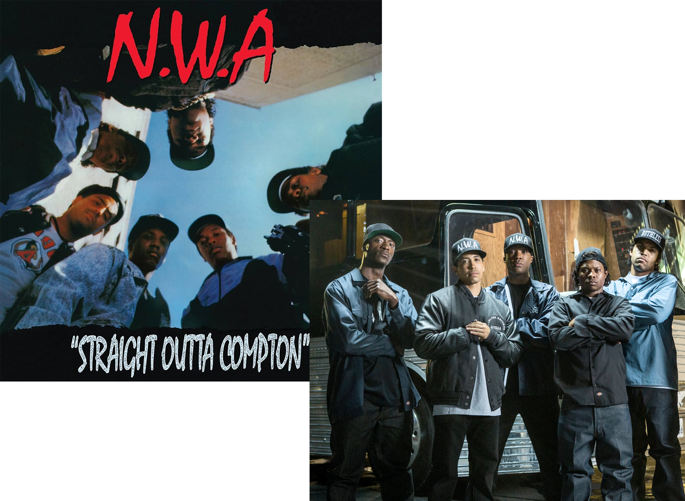
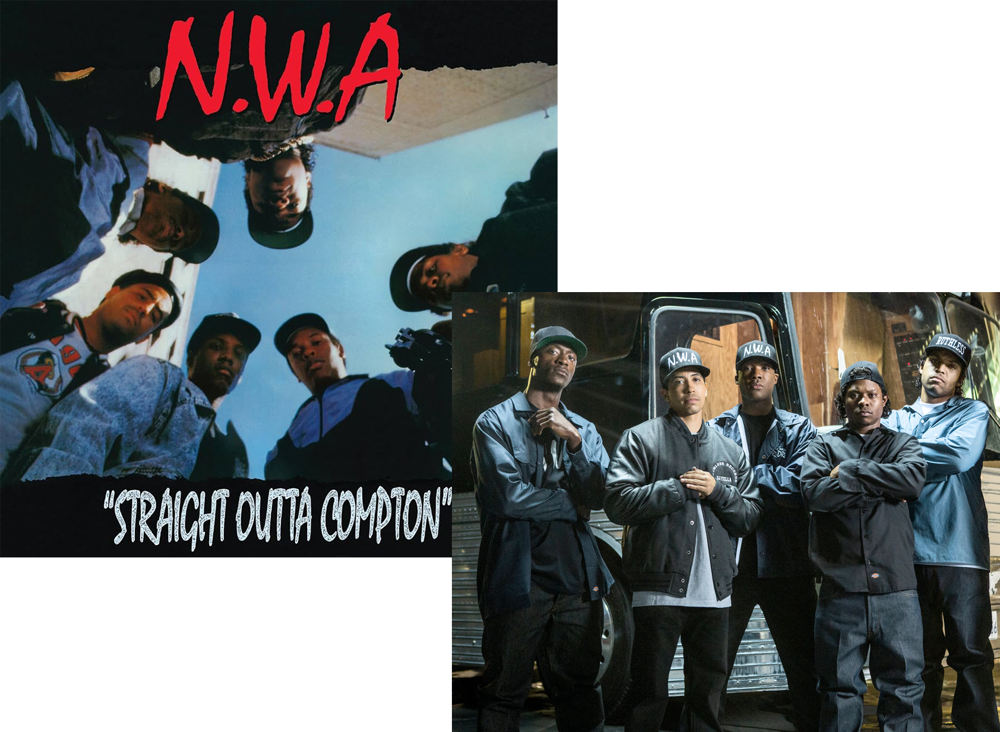

Dr. Dre: General Info
Dr. Dre's impact on rap, hip-hop, and pop music in general is nothing short of revolutionary. His production informed the dominant trends for several decades of rap, updating the noisy clamor of Public Enemy's Bomb Squad-produced tracks by bringing in funky rhythms for his breakthrough work with his group N.W.A., single-handedly inventing G-Funk in the '90s by reworking George Clinton's spaced-out party funk into something aggressive yet still commercially viable, and then abandoning the style when it became too ubiquitous by the early 2000s. Dre's rap skills were never as impressive as his production, but he played to his strengths by giving game-changing proteges the majority of time on the mike, first introducing the world to Snoop Dogg's laid-back charisma and then to Eminem's staggering technical abilities. Dre's multifaceted role in the music industry saw him forming labels Death Row and Aftermath, the latter of which released massively important records by 50 Cent, Kendrick Lamarr, and Anders Paak. Along with production duties, label CEO status, and other business ventures like his celebrity headphones-turned-streaming platform Beats by Dre, the good doctor continued to slowly and steadily release music of his own as the years went by, bolstering a discography full of groundbreaking work like his 1992 debut The Chronic with projects like his 2015 full-length Compton, and his six-song EP The Contract, released in conjunction with Grand Theft Auto in 2022.
N.W.A.
Dre became involved in hip-hop during the early '80s, performing at house parties and clubs with The World Class Wreckin' Cru around South Central Los Angeles and making a handful of recordings along the way. In 1986 he met Ice Cube, and the two rappers began writing songs for Ruthless Records, a label started by former drug pusher Eazy E. Eazy tried to give one of the duo's songs, "Boyz-n-the Hood," to HBO, a group signed to Ruthless. When the group refused, Eazy formed N.W.A. an acronym for N*gg*z With Attitude -- with Dre, Cube, MC Ren, and DJ Yellah, releasing their first album in 1987. A year later, N.W.A.. delivered Straight Outta Compton, a vicious record that became an underground hit with virtually no support from radio, the press, or MTV. N.W.A. became notorious for their hardcore lyrics, especially those of "Fuck tha Police," which resulted in the FBI sending a warning letter to and its parent company, Priority, suggesting that N.W.A. should watch their step.
Most of the group's political threat left with Cube when he departed in late 1989 amid many financial disagreements. While Eazy appeared to be the undisputed leader following Cube's departure -- and he was certainly responsible for the group approaching near-parodic levels with their final pair of records -- the music was in Dre's hands. On both the 1990 EP Miles and Runnin' and the 1991 album Efil4zaggin ("Niggaz4life" spelled backward), he created dense, funky sonic landscapes that were as responsible for keeping N.W.A. at the top of the charts as Eazy's comic-book lyrics. While the group was at the peak of its popularity in 1991, Dre began to make efforts to leave the crew, especially after he was charged with assaulting Dee Barnes, the host of a televised rap show, in 1991. The following year, Dre left the group to form Death Row Records with Suge Knight and N.W.A. affiliate the D.O.C. According to legend, Knight held N.W.A.'s manager at gunpoint and threatened to kill him if he refused to let Dre out of his contract.
Straight Outta Compton: The Movie
Straight Outta Compton is a 2015 American biographical drama film directed by F. Gary Gray that heavily features Dr. Dre. The movie depicts the rise and fall of the hip hop group N.W.A.with Dre, Eazy-E, Ice Cube, MC Ren, and DJ Yella. Dre and the other members of N.W.A.were involved in the production of the film, including Ice Cube and Dr. Dre as producers, as was Eazy-E's widow, Tomica Woods-Wright. MC Ren and DJ Yella served as creative consultants. Ice Cube is played by his real-life son, O'Shea Jackson Jr., who made his film debut. Corey Hawkins portrays Dr. Dre, Jason Mitchell is Eazy-E, Neil Brown Jr. is DJ Yella, and Aldis Hodge is MC Ren. Paul Giamatti stars as N.W.A.'s manager Jerry Heller. As the movie depicts alot of inspiring scenes including Dre's process and come up as a producer we definitely recommend watching the movie.